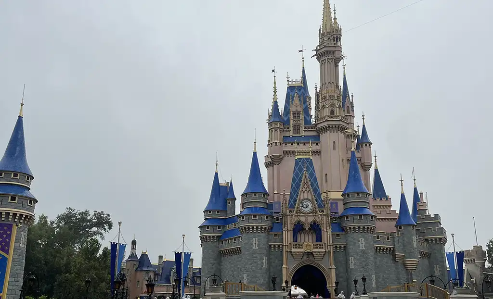

Magic Kingdom
Magic Kingdom is the most classic of the parks. It has the most rides, many of which are classics all around the world. It is so magical and fun for kids, but there are still plenty of things for adults to love as well. There are so many little parades and shows, characters and activities. Over the next few years there will be a lot of construction, but there is still a lot to do.
Lands
- Main Street USA
- Adventure Land
- Frontierland
- Liberty Square
- Fanatasyland
- Tomorrowland
Attractions
- Astro Orbiter
- Barnstormer
- Big Thunder Mountain Railroad- super fun, a Disney classic.
- Buzz Lightyear's Space Ranger Spin
- Country Bear Musical Jamboree- super fun AC break.
- Dumbo the Flying Elephant
- Haunter Mansion
- 'it's a small world"
- Jungle Cruise- another classic, such a fun goofy time.
- Mad Tea Party
- Magic Carpets of Aladdin
- Many Adventures of Winnie the Pooh- super fun and classic ride.
- Peter Pan's Flight
- Pirates of the Carribean- another classic, one of the best smells on property.
- Prince Charming Regal Carrousel
- Seven Dwarfs Mine Train- super fun mild coaster, good for littles.
- Space Mountain- another classic, I think its even better than Disneyland's.
- Swiss Family Treehouse
- Tiana's Bayou Adventure- super fun, storyline makes no sense but good for a hot day.
- Tomorrowland Speedway
- Tron Lightcycle / Run-such a unique and fun coaster, but be prepared to wait for a long time.
- Under the Sea- Journey of The Little Mermaid- another classic Disney dark ride.
- Walt Disney World Railroad
- Walt Disney's Carousel of Progress- I adore this show, so fun and so much cool history. Also a good naptime ride in the middle of the day.
- Walt Disney's Enchanted Tiki Room- another classic show, so fun and there's AC.
- Tomorrowland Transit Authority PeopleMover- so fun and another ride that is full of cool history.
Food
Quick Service
- Casey's Corner
- Columbia Harbour House
- Cosmic Ray's Starlight Cafe
- Friar's Nook
- Pecos Bill Tall Tale Inn and Cafe- super yummy rice bowls, nachoa, and tacos. Kids meals are the way to go.
- Pinocchio Village Haus
- Sleepy Hollow- yummy waffles and corndogs.
Treats and Snacks
- Aloha Isle- pineapple and coconut dole whip.
- Auntie Gravity's Galactic Goodies
- Cheshire Cafe
- Gaston's Tavern- cinnamon rolls and gray stuff.
- Golden Oak Outpost- Tiana's beignets.
- Liberty Square Market
- Lunching Pad
- Main Street Bakery
- Main Street Confectionery
- Plaza Ice Cream Parlor- ice cream on main street. The sugar-free raspberry sorbet is incredible.
- Prince Eric's Village Market
- Storybook Treats- rapunzel sundae is so so yummy and super shareable.
- Sunshine Tree Terrace- pineapple, orange, and vanilla dole whip and floats.
- Westward Ho
Table Service
- Diamond Horseshoe
- Jungle Navigation Co. LTD Skipper Canteen
- Liberty Tree Tavern
- Plaza Restaurant
- Tony's Town Square Restaurant- basic Italian restaurant, but the main street atmosphere is incredible.
Character Dining
- Be Our Guest Restaurant
- Cinderella's Royal Table
- Crystal Palace- Winnie the Pooh and friends, and the best churro mickey waffles.
Shows/Entertainment
Check app for locations and available times.
- Casey's Corner Pianist- fun ragtime style disney music. Grayson is the best.
- Dapper Dans- super fun acapella group.
- Disney Adventure Friends Cavalcade
- Disney Festival of Fantasy Parade
- Disney Starlight: Dream the Night Away- beautful new nighttime show. If there are 2 showtimes, usually the second one is less busy.
- Enchanted Tales with Belle
- Hall of Presidents
- Happily Ever After- magical firework show that is so fun to see, but that is also prime time to go on rides because everyone is watching the fireworks.
- Main Street Philharmonic
- Mickey's PhilharMagic
- Mickey's Magical Friendship Faire
- A Pirate's Adventure- Treasures of the Seven Seas- fun little treasure hunt around adventureland, good for littles.
- Smellephants on Parade
Characters
Check app for locations and available times.
- Aladdin
- Anastasia and Drizella
- Ariel
- Cinderella- located in Princess Fairytale Hall. Such a fun charcater meet and greet.
- Daisy Duck
- Donald Duck
- Elena
- Goofy
- Mickey Mouse- in his magician outfit. So so fun.
- Minnie Mouse
- Mirabel- such a fun character to meet, but her line is usually long.
- Mulan
- Peter Pan
- Princess Jasmine
- Princess Rapunzel- located in Princess Fairytale Hall. Such a fun charcater meet and greet.
- Princess Tiana- located in Princess Fairytale Hall. Such a fun charcater meet and greet.
- Shaker
- Snow White- located in Princess Fairytale Hall. Such a fun charcater meet and greet.
- Tigger
- Wendell
- Winnie the Pooh